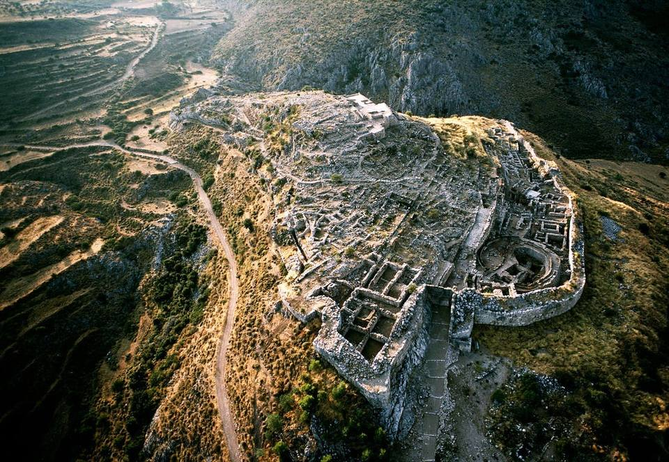
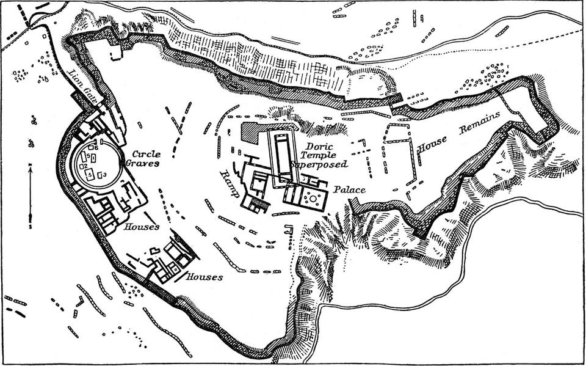
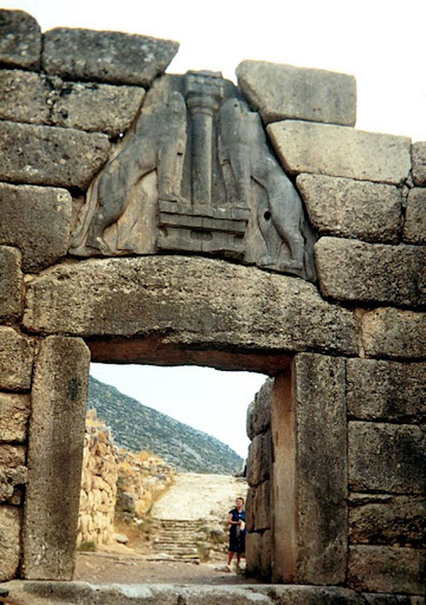

At a glance


Key facts
- Typea fortified, palace-centred citadel, the leading centre of the Mycenaean world
- Builtroughly the 17th to 11th century BC, at its height c.1350 to 1200 BC
- Locationa hilltop in the north-east Peloponnese, commanding the Argive plain and the routes across it
- Materialslimestone, with shinier conglomerate used for show
- Rediscoveredexcavated by Heinrich Schliemann in 1876, who opened the shaft graves of Grave Circle A
- Significancegives the whole age its name, and is famous for its walls, gate, frescoes, tombs and treasure
Why it matters
- the richest and most heavily fortified of the sites, and the benchmark the others are measured against
- Homer calls it "rich in gold" (Iliad 11.25), and the gold from the graves bears that out
- its commanding position controlled the plain below, which helps explain its power
- abandoned around 1200 to 1100 BC as the wider Bronze Age world collapsed
Around the citadel
The walls, the gate, the palace, the water and the tombs. Almost every feature works on two levels at once: it is practical, and it shows off the power of the rulers.
The Cyclopean walls
The huge defensive wall ringing the citadel, built to keep attackers out.
- about 900 m around by 1200 BC, 5.5 to 7.5 m thick and around 12 m high
- unmortared limestone blocks of about two tonnes each, a rubble core behind a facing of large blocks, moved on rollers and up earth ramps and built to follow the hill
- so massive that later Greeks could not believe humans had raised them: Pausanias records the tradition that the one-eyed Cyclopes built them, which is where "Cyclopean" comes from

The Lion Gate
The monumental main gateway, and a statement of the rulers' power to anyone approaching.
- built in the 13th century at the city's height, framed in shiny conglomerate to set it apart
- a roughly 3 m square opening with a 20-tonne lintel; above it a corbelled relieving triangle diverts the weight of the wall off the lintel
- the triangle holds the earliest monumental sculpture on the Greek mainland: two facing lions, their heads now lost, flanking a Minoan-style column that may stand for the palace or its protecting deity
The underground cistern
A hidden water tank that kept the city supplied if it was besieged and cut off from its spring.
- a passage runs from the northern sally port, under the wall, down to a tank about 18 m below ground
- fed by clay pipes from a spring outside the walls, so the Mycenaeans could still draw water under siege
- roofed by corbelling, laying ever-larger blocks until they meet at the top
The grave circles and tholos tombs
- Grave Circle A sits inside the walls, re-walled and regraded when the Lion Gate went up so it stood grandly within the citadel; Schliemann dug it in 1876
- the finest tholos is the Treasury of Atreus, also called the Tomb of Agamemnon, whose corbelled dome was the largest of its kind in the ancient world for around a thousand years
One site, every Mycenaean preoccupation in stone: defence in the walls, display at the gate, administration in the palace, survival in the cistern, and status in the tombs.
Significance and interpretation
Mycenae and Homer: the key debate
- For a link: the site shows a real, wealthy, war-loving society ruled by powerful kings from a great citadel, just the world the poems look back on, and Homer's "rich in gold" is matched by the gold from the graves
- Against a close fit: Homer composed around the 8th century, about four hundred years after the palaces fell; his heroes know nothing of the Linear B palace records, and they are cremated, while the kings of the shaft graves were buried
So the site shows that a great, lost age really existed for Homer to look back on, but not that the events he describes, or the everyday details, are true. It supports the poems in broad outline, not in their detail.
How useful is the site as evidence?
- Strong on power, wealth and war: the walls, the gateway built to impress, the gold-filled graves and the labour needed to move such stones
- Weak on ordinary life: the poor, women, work and religion leave little trace, and stone and gold survive while wood, cloth and food rot away
- Be careful with the famous names: Schliemann dug with Homer in hand and named the "Mask of Agamemnon"; the "Treasury of Atreus" is an old traditional name. None proves who was buried there
Exam focus
- Give two features of the citadel at Mycenae that show it was built for defence. (2)
- What evidence does Mycenae give for the wealth of its rulers? (4)
- "The remains at Mycenae prove that Homer's world was real." How far do you agree? (8)